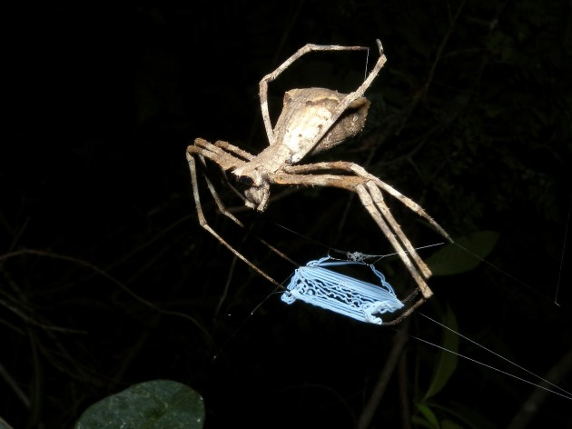
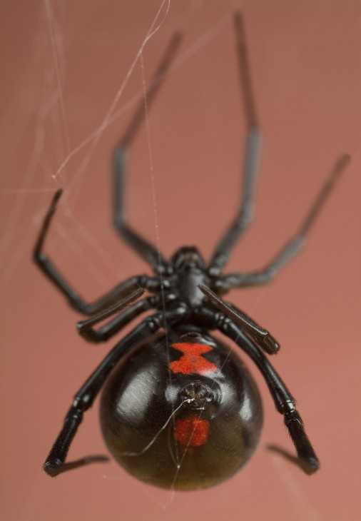

There are some ingenious ways spiders use to capture prey. For instance, the ogre-faced spider weaves a net between its front legs and then dangles above places where prey are likely to pass through. By using its web like a net, it scoops up hapless prey. Bolas spiders use a long line of silk ended with a spot of sticky glue (a bolas), swinging it at nearby moths to catch them, much like a fishing line. 
Black widows are known for cannibalizing their mates, but this doesn’t actually happen all the time. The exception seems to be the red widow, where the male force feeds himself to the female by placing himself into her mandibles. If she ‘spits him out,’ so to speak, he will keep placing himself there until she eventually eats him. 